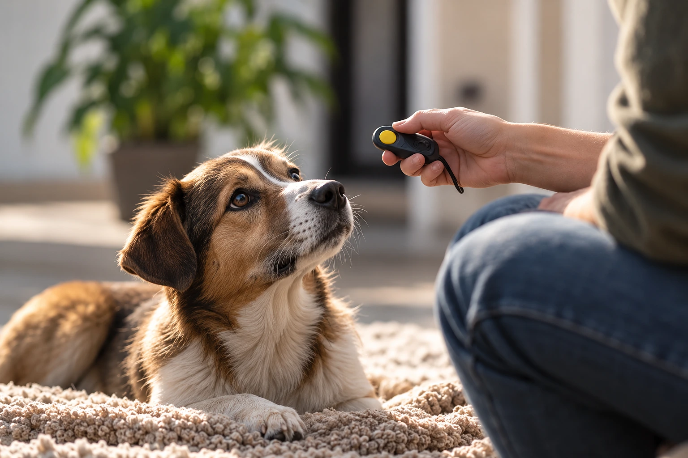

Percorsi individuali
Un percorso che parte da ciò che vivete davvero.
Un lavoro dedicato al singolo cane e alla sua persona, per leggere ciò che accade nel contesto reale e costruire passi sostenibili.

Quando può essere utile
Non serve aspettare che una difficoltà diventi ingestibile.
A volte la richiesta nasce da un episodio preciso. Altre volte è la sensazione di non riuscire a leggere bene ciò che il cane sta comunicando. Il percorso individuale permette di allargare lo sguardo e definire passi realmente sostenibili.
Pre-adozione
Per ragionare su aspettative, organizzazione e caratteristiche del cane prima dell’arrivo.
Arrivo di un cucciolo
Per preparare spazi, routine e prime esperienze della famiglia.
Quotidianità
Quando passeggiate, casa, ospiti o altri contesti sono diventati difficili da gestire.
Paure e reattività
Per leggere segnali, distanze e situazioni che mettono cane o persona in difficoltà.
Cambiamenti
Traslochi, nuove persone o animali, variazioni di routine e passaggi delicati.
Conoscersi meglio
Anche senza un problema specifico, per ampliare osservazione e comunicazione.
Come si svolge
Un percorso leggibile, incontro dopo incontro.
La struttura viene adattata alla situazione, ma alcuni passaggi aiutano a dare ordine al lavoro.
- 01
Mi racconti cosa sta accadendo
Età, storia, contesto, zona e ciò che vorresti comprendere sono sufficienti per iniziare.
- 02
Si sceglie il contesto giusto
Presenza, domicilio, ambiente esterno o online vengono valutati in base alle informazioni necessarie.
- 03
Si osservano cane e relazione
Non soltanto il comportamento che preoccupa, ma ciò che lo precede e lo modifica.
- 04
Si definiscono passi praticabili
Esperienze, ambiente e strumenti vengono scelti senza perdere di vista tempi e possibilità reali.
- 05
Si verifica ciò che cambia
Il percorso viene rivisto sulla base delle osservazioni, non per aderire a una sequenza prefissata.

Strumenti e quotidianità
Lo strumento non è il metodo.
Clicker, rinforzi, gestione degli spazi, variazioni di routine o attività specifiche possono entrare nel percorso. Nessuno di questi elementi viene però applicato in automatico.
La domanda resta sempre la stessa: questo strumento aiuta quel cane e quella persona, in quel momento, a comprendere meglio ciò che stanno vivendo?
- Indicazioni comprensibili e sostenibili
- Attenzione ai tempi di apprendimento
- Verifiche legate al contesto reale
- Coinvolgimento delle persone che vivono con il cane
Domande frequenti
Prima di scegliere.
Ogni situazione resta individuale. Il primo contatto permette di verificare ciò che è davvero adatto.
Quanti incontri servono?
Non esiste un numero uguale per tutti. Dopo il primo confronto, Valentina propone una direzione e la verifica nel tempo.
Il primo incontro può svolgersi a domicilio?
Sì, quando osservare il cane nel contesto domestico è utile e la zona è raggiungibile.
Lavori anche con cuccioli appena arrivati?
Sì. Il percorso può accompagnare l’inserimento del cucciolo e l’organizzazione della quotidianità.
Il clicker viene sempre utilizzato?
No. È uno degli strumenti possibili e viene proposto soltanto quando è coerente con il percorso.
Primo contatto
Raccontami cosa sta accadendo.
Bastano poche righe per capire da dove partire e quale modalità può essere più adatta.
Scrivi su WhatsApp ↗Il messaggio è già impostato e puoi modificarlo prima dell’invio.